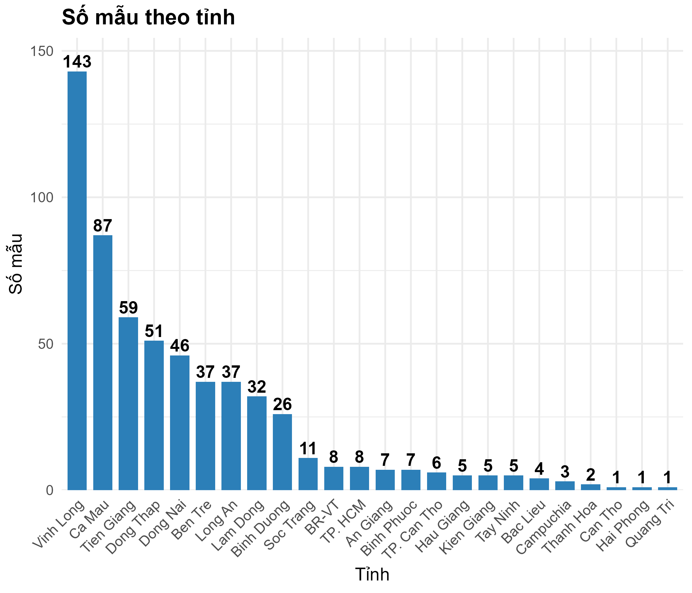

Ghi lại cách dùng Bar_plot.R trong repo
NS1_Biosensor_Analysis
để vẽ biểu đồ cột số mẫu xét nghiệm NS1 theo từng tỉnh — từ việc đọc file Excel gốc
đến giải thích từng dòng code, và cách chỉnh sửa nếu muốn áp dụng cho bộ dữ liệu khác.
1. Bộ dữ liệu
Dữ liệu nằm trong thư mục data/ của repo, dạng file Excel với sheet
NS1_analysis_R. Mỗi dòng là một mẫu bệnh phẩm, với các cột chính:
| cột | ý nghĩa |
|---|---|
| Ma_so | Mã số mẫu |
| Gioi_tinh | Giới tính bệnh nhân |
| Tuoi_nam | Tuổi (năm) |
| Tinh | Tỉnh/thành nơi lấy mẫu |
| SXH | Phân loại sốt xuất huyết |
| Ngay_khoi_benh | Ngày khởi bệnh |
| PCR / Ct | Kết quả và chu kỳ ngưỡng PCR |
| Ket_qua_NS1_Biosensor / COI_NS1 | Kết quả và chỉ số biosensor NS1 |
Bài này chỉ dùng cột Tinh để đếm số mẫu theo từng tỉnh — một bước
khảo sát nhanh (exploratory) rất hay làm đầu tiên trước khi đi vào phân tích sâu hơn.
2. Cài thư viện & đọc dữ liệu
Script dùng dplyr để xử lý dữ liệu và ggplot2 để vẽ. Đọc file Excel cần thêm readxl:
install.packages(c("readxl", "dplyr", "ggplot2"))
library(readxl)
library(dplyr)
library(ggplot2)
df <- read_excel("data/NS1_Biosensor_analysis.xlsx", sheet = "NS1_analysis_R")
df chính là data frame mà toàn bộ Bar_plot.R thao tác lên —
cần chạy đoạn đọc dữ liệu này trước, vì bản thân Bar_plot.R không tự đọc file.
3. Đếm số mẫu theo tỉnh
province_counts <- df %>%
filter(!is.na(Tinh), Tinh != "") %>%
count(Tinh, name = "so_mau") %>%
arrange(desc(so_mau))filter(!is.na(Tinh), Tinh != "")— loại các dòng thiếu tên tỉnh, tránh cột trống hiện lên biểu đồ.count(Tinh, name = "so_mau")— đếm số dòng ứng với mỗi tỉnh, đặt tên cột kết quả làso_mau.arrange(desc(so_mau))— sắp xếp giảm dần, để bước vẽ ở dưới hiển thị tỉnh nhiều mẫu nhất trước.
Với dữ liệu hiện tại, kết quả có 653 mẫu trải trên 24 tỉnh/thành, dẫn đầu là Vĩnh Long, Cà Mau, Tiền Giang.
4. Vẽ biểu đồ với ggplot2
p_province <- ggplot(province_counts,
aes(x = reorder(Tinh, -so_mau), y = so_mau)) +
geom_col(fill = "#2C7FB8", width = 0.75) +
geom_text(aes(label = so_mau),
vjust = -0.3,
size = 4.5,
fontface = "bold") +
labs(
title = "Số mẫu theo tỉnh",
x = "Tỉnh",
y = "Số mẫu"
) +
scale_y_continuous(
expand = expansion(mult = c(0, 0.08))
) +
theme_minimal(base_size = 13) +
theme(
axis.text.x = element_text(angle = 45, hjust = 1),
plot.title = element_text(face = "bold")
)
p_provinceGiải thích từng lớp (layer):
reorder(Tinh, -so_mau)— sắp trục X theo số mẫu giảm dần, thay vì theo thứ tự alphabet mặc định.geom_col(fill = "#2C7FB8")— vẽ cột đặc, màu xanh dương cố định cho tất cả các tỉnh.geom_text(..., vjust = -0.3)— in số mẫu ngay phía trên mỗi cột, đẩy lên một chút để không dính vào đỉnh cột.scale_y_continuous(expand = expansion(mult = c(0, 0.08)))— chừa thêm 8% khoảng trống phía trên trục Y, để số hiển thị không bị cắt bởi viền biểu đồ.theme(axis.text.x = element_text(angle = 45, hjust = 1))— xoay nhãn tỉnh 45 độ, cần thiết vì có 24 tỉnh — để ngang sẽ đè lên nhau.
5. Kết quả

could not find function "%>%",
nghĩa là chưa library(dplyr). Nếu báo object 'df' not found, nghĩa là chưa chạy
bước đọc file Excel ở mục 2 trước khi chạy Bar_plot.R.
6. Muốn tùy biến thêm?
- Đổi màu cột theo nhóm — ví dụ tô màu theo
SXH(loại sốt xuất huyết): thayfill = "#2C7FB8"bằngaes(fill = SXH)tronggeom_col(). - Chỉ hiển thị top N tỉnh nhiều mẫu nhất: thêm
slice_head(n = 10)vào chuỗi%>%ở bước đếm, trước khi vẽ. - Lưu hình ra file: thêm
ggsave("bar_plot_tinh.png", p_province, width = 10, height = 6, dpi = 300)ở cuối script.
Code gốc và dữ liệu đầy đủ nằm trong repo
daohuymanh/NS1_Biosensor_Analysis,
thư mục scripts/ và data/.